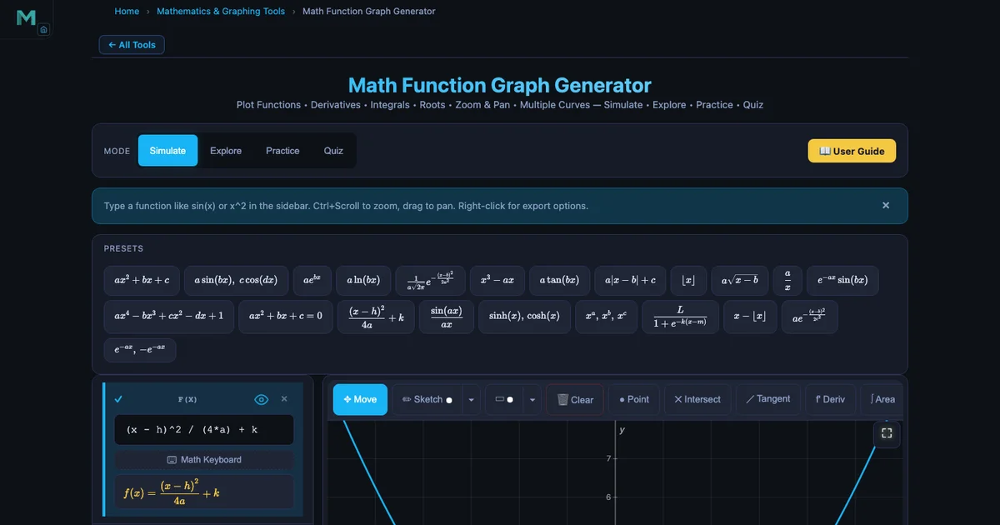
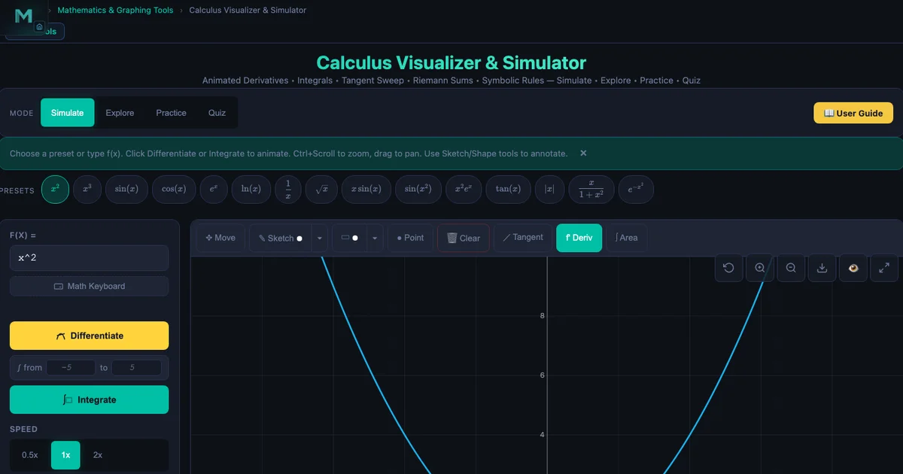

Interactive Simulators for High School Mathematics Teachers

- The best free simulators for high school maths are the Math Graphing tool (plots any function with live parameter sliders and a 15-category Learn mode), the Calculus Visualizer (tangent-slope and Riemann-sum tools across 16 preset functions), the Simple Harmonic Motion simulator, and the Matrix Multiplication tool.
- They work because of the prediction-plot-compare feedback loop: a graphing slider shows that changing b in y = sin(bx) from 1 to 2 halves the period instantly, connecting the rule period = 2π/b to the visual shape.
- All tools are free, run in any browser with no install or sign-up, and run entirely in JavaScript once loaded.
Here’s a moment most maths teachers know well. You write \(y = a(x - h)^2 + k\) on the board, explain that \(h\) shifts the parabola right and \(k\) shifts it up, and half the class nods. Then you ask them to sketch \(y = 2(x - 3)^2 + 1\) on their own, and the results are all over the place. The formula makes sense as a sentence. It doesn’t yet make sense as a picture. That gap — between symbolic fluency and visual understanding — is where interactive simulators do their best work.
The tools on this page are free, run in any browser, and require no installation or account. They don’t replace teaching. They give your explanations something to land on.
The Problem with Teaching Maths Abstractly
Mathematics at the high school level asks students to do something genuinely hard: hold an abstract symbol in mind and reason about it as though it were a real object. Most students can memorise a rule. Fewer can look at \(f(x) = \frac{1}{x^2 - 4}\) and immediately picture two vertical asymptotes at \(x = \pm 2\), a curve that explodes toward ±∞ on either side of each one, and a graph that’s symmetric about the \(y\)-axis. That kind of visual fluency takes time — and it develops faster when students can make a prediction, test it instantly, and see where they were wrong.
Static textbook diagrams can’t do that. A simulator can. The difference isn’t novelty; it’s the feedback loop. In a 45-minute class, a student using a graphing simulator can test more function shapes than they’d encounter in a week of worksheet exercises. Each test is self-correcting. The curve either matches their expectation or it doesn’t, and finding out why is the moment learning happens.
Graphing Functions — From Equation to Shape in One Click
The Math Graphing Simulator accepts any function in standard notation — sin(x), x^2 - 5*x + 6, 1/(x^2 - 4), exp(-x^2) — and plots it immediately. You can overlay up to eight functions simultaneously, each in a different colour, so comparisons are visual rather than sequential.
The parameter slider feature is particularly useful for transformation lessons. Write \(f(x) = a \sin(bx + c) + d\) and attach sliders to \(a\), \(b\), \(c\), \(d\). As students drag each slider, the curve updates in real time. Changing \(b\) from 1 to 2 compresses the period from \(2\pi\) to \(\pi\) right in front of them. Changing \(a\) from 1 to −1 reflects the curve across the \(x\)-axis. No discussion of “what would happen if” — you just show it.
The Learn mode organises 15 topic categories: roots and zeros, asymptotes, absolute value, trigonometry, inverse trig, exponential, logarithmic, transformations, calculus derivatives, calculus integrals, limits, floor/ceiling functions, damped oscillations, normal distribution, and exponential probability. Each category card contains a one-paragraph explanation and a fully worked example. For the transformation category, the worked example reads: “Describe the transformation from \(y = x^2\) to \(y = (x - 3)^2 + 2\)” — answer: right 3, up 2, vertex moves from (0, 0) to (3, 2).
The Quiz mode generates five multiple-choice questions drawn from whichever topic category is active. It’s a low-stakes exit-ticket that takes under three minutes and gives you instant feedback on what the class absorbed.
Classroom use: function families (20 min)
Set-up (3 min). Project the tool and plot \(y = x^2\) as the baseline. Ask the class to predict what \(y = (x - 2)^2\) looks like before you type it. Take three or four guesses aloud, then add the second curve.
Exploration (12 min). Students work in pairs on their own devices. Task: plot four members of the family \(y = a(x - h)^2 + k\) where they choose \(a\), \(h\), \(k\). They sketch each result on paper and write the vertex coordinates before checking. The combination of prediction → plot → sketch forces active engagement rather than passive watching.
Debrief (5 min). Ask: “What happens to the vertex when you change \(h\) vs \(k\)? What happens to the ‘width’ when \(|a| > 1\)?” Students can answer by demonstrating directly on screen.
Calculus Made Visible — Derivatives and Riemann Sums on Screen
The Calculus Visualizer is built around 16 preset functions — \(x^2\), \(x^3\), \(\sin x\), \(\cos x\), \(e^x\), \(\ln x\), \(\sqrt{x}\), \(|x|\), \(\tan x\), \(x \sin x\), \(\sin(x^2)\), \(x^2 e^x\), \(1/x\), \(x/(1+x^2)\), and the Gaussian \(e^{-x^2}\) — and two core visual tools.
The tangent line tool places a moveable tangent at any point on \(f(x)\). The slope readout updates continuously as you drag, so students can directly observe that the slope of \(\sin x\) equals 1 at \(x = 0\), drops to 0 at \(x = \pi/2\), and reaches −1 at \(x = \pi\). That’s the derivative rule \(\tfrac{d}{dx}\sin x = \cos x\) made tangible before any algebraic proof. Most students find this viscerally convincing in a way that limit definitions take much longer to achieve.
The Riemann sum panel starts with \(n = 8\) rectangles and steps through coarse → mid → fine → smooth as students watch the area approximation converge. The area readout is numerical, so you can tie it to the definite integral formula:
\[\int_a^b f(x)\,dx = \lim_{n \to \infty} \sum_{k=1}^{n} f(x_k^*)\,\Delta x\]
For \(f(x) = x^2\) on \([0, 2]\), the exact answer is \(\bigl[\tfrac{x^3}{3}\bigr]_0^2 = \tfrac{8}{3} \approx 2.667\). Set \(n = 8\) and the Riemann sum shows roughly 2.75; increase to smooth and it converges to 2.667. Students see the limit being taken rather than taking it on faith.
The tool also displays the derivative and integral functions as overlaid curves. Select the \(\sin x\) preset and both panels are labelled: \(f'(x) = \cos x\) in the derivative panel, \(F(x) = -\cos x\) in the integral panel. The displayed rule — “sin derivative” or “power rule” — names the technique applied, which is useful when students are still learning which rule applies where.

Trigonometry Through Motion — Sine Waves Without a Protractor
The abstract definition of sine — opposite over hypotenuse in a right triangle — doesn’t obviously produce a smooth wave. The connection between the unit circle, oscillating motion, and the \(\sin x\) graph is one of the conceptual jumps in high school maths that textbooks describe but rarely show.
The Simple Harmonic Motion Simulator makes the connection explicit. It animates a mass on a spring and simultaneously traces the displacement–time graph in real time. Students can see the sinusoidal wave being drawn by the moving mass. The displacement equation is:
\[x(t) = A\cos(\omega t + \phi)\]
where \(A\) is amplitude, \(\omega = 2\pi f\) is angular frequency, and \(\phi\) is phase. Changing the mass slider increases the period (the wave stretches horizontally); changing the spring constant increases the frequency (the wave compresses). Students who struggle to remember which parameter does what have a physical reference: a heavier mass oscillates more slowly, a stiffer spring oscillates faster.
Use the simulator after the Math Graphing tool. Plot \(y = A\cos(\omega x)\) with parameter sliders on the graphing tool first, then open SHM and show the same parameters controlling a physical spring. The equation that looked arbitrary on a graph now describes something students can watch.
Lesson idea: period and frequency (15 min)
Warm-up (3 min). Ask: “If I double the mass on a spring, what happens to the period?” Write down predictions. “If I double the spring stiffness?”
Demonstration (7 min). Open the SHM simulator. Set mass to 0.5 kg, k to 20 N/m and run. Read the period from the graph. Double the mass to 1.0 kg. Period increases by \(\sqrt{2} \approx 1.41\). Double k to 40 N/m instead. Period decreases by \(\sqrt{2}\). Ask: “Does that match your prediction?”
Formula connection (5 min). Write \(T = 2\pi\sqrt{m/k}\) and verify the numbers from the simulator. Students who saw the simulator result first find the formula confirmation satisfying rather than confusing.
Matrices — Making Linear Algebra Click
Matrix multiplication is one of the most procedurally demanding topics in high school algebra. Students can follow the row-times-column rule and get the right answer without any sense of what the operation means geometrically or why the inner dimensions must match.
The Matrix Multiplication Simulator shows the computation cell by cell, colour-coding exactly which row of \(A\) and which column of \(B\) combine to produce each entry of \(C\). The formula is:
\[C[i][j] = \sum_{k=1}^{n} A[i][k] \cdot B[k][j]\]
In the animated mode, each step highlights one row of \(A\) and one column of \(B\), computes the dot product, and writes it into the corresponding cell of \(C\). For a \(2 \times 2\) example, this takes about four steps. For \(3 \times 3\), nine steps. Students can pause at each step and verify the calculation by hand.
The tool supports matrices up to \(6 \times 6\), and also demonstrates transpose, inverse, scalar multiplication, determinant, and rank in separate operation modes. A built-in quiz covers properties like det(\(I\)) = 1, the rule \((AB)^T = B^T A^T\), and when the product \(AB\) is defined (inner dimensions must match).
Classroom use: commutativity demo (5 min)
Enter two \(2 \times 2\) matrices, compute \(AB\), then swap them and compute \(BA\). The results differ. That single demonstration establishes that matrix multiplication is not commutative — a fact students constantly forget because real-number multiplication is commutative. Seeing the two different answer matrices side by side makes the rule stick in a way that “remember, \(AB \neq BA\) in general” doesn’t.
Putting It Together — A 45-Minute Lesson That Runs Itself
These tools work best when they’re embedded in the lesson rather than appended to it. Here’s a structure for a 45-minute trigonometry lesson that uses three simulators:
0–5 min — Hook. Open the SHM simulator and run it with the default mass and spring. Ask: “What kind of function describes this motion?” Most students say “a wave” or “sine.” Ask: “What determines how fast the wave goes?”
5–20 min — Conceptual build. Switch to the Math Graphing tool. Plot \(y = \sin x\), then \(y = \sin(2x)\), then \(y = \sin(0.5x)\). Students describe in writing what changes (period) and what stays the same (amplitude, shape). Then plot \(y = 3\sin(x)\) and \(y = \sin(x) + 2\). Separate amplitude from vertical shift.
20–35 min — Practice problems. Students sketch by hand three functions you name aloud — e.g. \(y = 2\sin(3x)\), \(y = -\cos(x) + 1\), \(y = \sin(x - \pi/2)\) — then verify on the graphing tool. They record one thing they got right and one thing that surprised them.
35–42 min — Calculus connection (if year-12). Open the Calculus Visualizer, load \(\sin x\). Show that the tangent slope at \(x = 0\) is 1, at \(x = \pi/2\) is 0, at \(x = \pi\) is −1. Then overlay the derivative curve — it’s \(\cos x\). Ask: “What does that tell you about the relationship between sine and cosine?”
42–45 min — Exit quiz. The Math Graphing tool’s quiz mode generates five trigonometry questions in under a minute. Students submit answers on paper. You have a snapshot of comprehension before the bell.
Try It Yourself
All tools below are free — no account, no download, works on any modern browser.
Key Takeaways
- The prediction → plot → compare loop is more effective than demonstration alone — students who guess first engage more deeply with the result.
- The Math Graphing tool’s Learn mode covers 15 categories from roots and asymptotes to calculus and statistics, each with a worked example embedded in the simulator.
- The tangent slope tool in the Calculus Visualizer makes \(\tfrac{d}{dx}\sin x = \cos x\) geometrically obvious before any algebraic proof — the slope traces out the cosine wave as you drag the tangent point.
- The SHM Simulator connects \(x(t) = A\cos(\omega t + \phi)\) to a physical spring, giving students a mechanical reference for every parameter in the trig equation.
- Matrix multiplication’s non-commutativity is best demonstrated rather than declared — computing \(AB\) and \(BA\) and showing different results takes 60 seconds in the simulator and sticks.
- For the strongest lessons, open the simulator before the formula. Let students observe and describe the pattern, then show the algebraic form that captures it.
- All simulators include quiz modes that generate topic-specific questions in seconds — useful as low-stakes exit tickets without any preparation.
Frequently Asked Questions
Which free simulators are best for teaching high school mathematics?
NHIT VisualLab offers several tools suited to high school maths. The Math Graphing tool lets students plot and explore any function — linear, quadratic, trigonometric, exponential — with real-time parameter sliders and a built-in Learn mode covering 15 topic categories. The Calculus Visualizer shows derivatives, tangent lines, and Riemann sums interactively. The Simple Harmonic Motion simulator connects sine waves to real oscillating motion. The Matrix Multiplication tool visualises the dot-product calculation step by step with colour-coded cell animations. All tools are free, browser-based, and require no sign-up or installation.
How can a graphing simulator help students understand function transformations?
A graphing simulator lets students manipulate parameters \(a\), \(b\), \(h\), and \(k\) in real time and watch the curve shift, stretch, or reflect immediately. For example, changing \(b\) in \(y = \sin(bx)\) from 1 to 2 halves the period visually on screen — students see the curve compress before they read the formula. This connects the algebraic rule (period = \(2\pi/b\)) to the visual shape in a way that static textbook diagrams cannot. The NHIT VisualLab Math Graphing tool also has a Learn mode with 15 topic categories covering transformations, asymptotes, roots, and more.
Can these simulators be used without internet access in the classroom?
NHIT VisualLab tools require an internet connection to load from NHIT VisualLab. However, once the page is loaded in a browser, the simulators run entirely in JavaScript — no further server requests are made during use. If your school has unreliable Wi-Fi, you can load the tools before the lesson over a stable connection and leave the browser tabs open throughout the session. The tools do not require accounts or cookies to function.
How does the Calculus Visualizer help with teaching derivatives?
The Calculus Visualizer displays \(f(x)\), its derivative \(f'(x)\), and its integral \(F(x)\) simultaneously. Students can click any point on \(f(x)\) to place a tangent line and read the exact slope — which equals \(f'(x)\) at that point. For the \(\sin x\) preset, the tangent slope at \(x = 0\) is 1 (matching \(\cos 0 = 1\)), at \(x = \pi/2\) is 0, and at \(x = \pi\) is −1. Watching the tangent slope trace out the cosine wave makes the rule \(\tfrac{d}{dx}\sin x = \cos x\) geometrically obvious rather than something to memorise.
What is the best way to use matrix simulators in a high school algebra lesson?
Start with a 2×2 example where students can verify the answer by hand. Enter the matrices into the Matrix Multiplication tool, run the animated step-by-step mode, and compare the colour-coded dot products to their hand calculations. The tool highlights exactly which row of \(A\) and which column of \(B\) combine to produce each cell of \(C\), so the formula \(C[i][j] = \sum A[i][k] \cdot B[k][j]\) becomes a visible operation. After the 2×2 case, scale up to 3×3 or explore non-commutativity by swapping \(A\) and \(B\) and observing that the result changes.
The goal isn’t to make maths easier by hiding its difficulty. It’s to make the difficulty productive — to give students something to push against that responds immediately and honestly. A simulator that shows you the cosine wave emerging from a moving tangent slope isn’t simplifying calculus; it’s showing you what calculus means before you prove it. That order of operations — meaning first, proof second — tends to produce students who can actually use what they learn.
Open the Math Graphing Simulator, type in your next lesson’s function, and see what your students will see before you walk into the room.